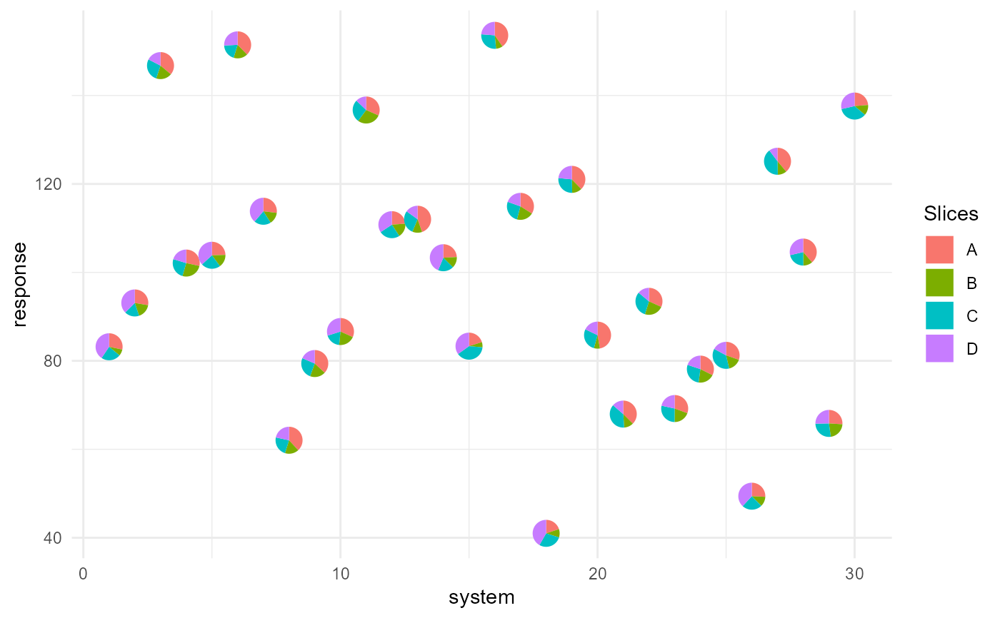
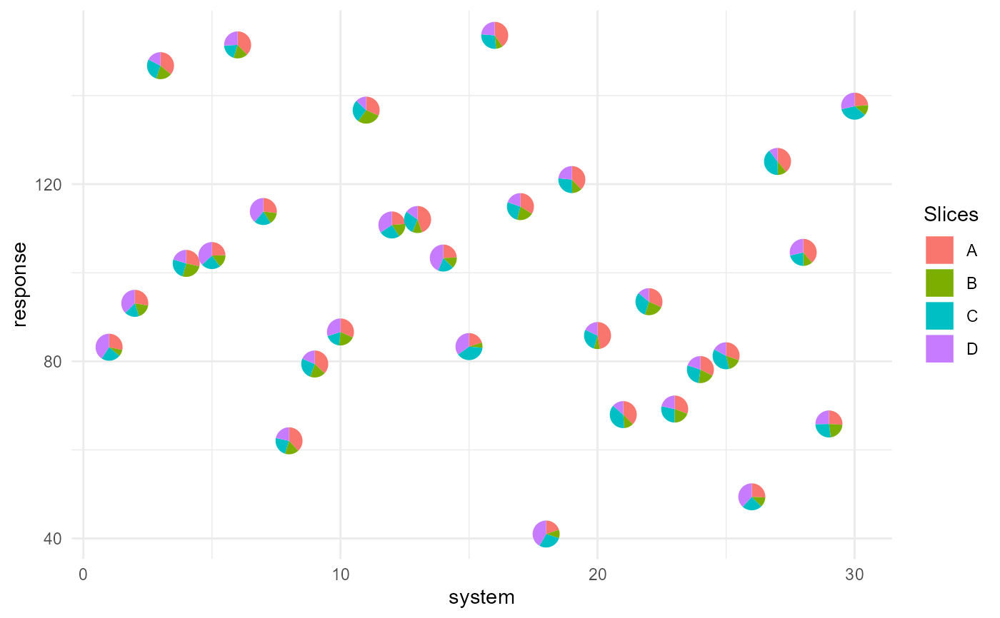

PieGlyph: Creating scatter plots with points replaced with axis invariant pie-glyphs
Source:R/PieGlyph-package.R
PieGlyph-package.RdThis packages replaces the points in a scatter plot with pie-chart glyphs showing the relative proportions of different categories (presented as columns with non-negative values in the dataset). The pie glyphs are independent of the axes and plot dimensions to prevent distortions when the plot dimensions are changed.
Author
Maintainter: Rishabh Vishwakarma vishwakr@tcd.ie (ORCID)
Authors:
Catherine Hurley
Caroline Brophy
Examples
## Load libraries
library(tidyverse)
library(PieGlyph)
## Simulate raw data
set.seed(123)
plot_data <- data.frame(response = rnorm(30, 100, 30),
system = 1:30,
group = sample(size = 30,
x = c('G1', 'G2', 'G3'),
replace = TRUE),
A = round(runif(30, 3, 9), 2),
B = round(runif(30, 1, 5), 2),
C = round(runif(30, 3, 7), 2),
D = round(runif(30, 1, 9), 2))
head(plot_data)
#> response system group A B C D
#> 1 83.18573 1 G1 5.80 1.57 4.78 8.31
#> 2 93.09468 2 G3 6.07 3.76 3.87 8.21
#> 3 146.76125 3 G1 6.60 3.48 5.01 3.19
#> 4 102.11525 4 G2 5.00 4.57 4.42 3.57
#> 5 103.87863 5 G1 5.93 3.69 5.60 8.89
#> 6 151.45195 6 G1 8.73 3.95 4.50 5.96
## The data has 30 observations and seven columns. `response` is a continuous
## variable measuring system output while `system` describes the 30
## individual systems of interest. Each system is placed in one of three
## groups shown in `group`. Columns `A`, `B`, `C`, and `D` measure system attributes.
## Basic plot showing the outputs for each system as a scatterplot and
## replacing the points with pie-chart glyphs showing the relative proportions
## of the four system attributes
ggplot(data = plot_data, aes(x = system, y = response))+
geom_pie_glyph(slices = c('A', 'B', 'C', 'D'))+
theme_minimal()

##### Stack the attributes in one column
## The four attributes can also be stacked and combined into one column
## to generate the plot.
plot_data_stacked <- plot_data %>%
pivot_longer(cols = c('A','B','C','D'),
names_to = 'Attributes',
values_to = 'values')
## This is the same data as before, just that the four attributes
## are combined into a single column, i.e. each system is now represented
## by four rows instead of the one row from before.
head(plot_data_stacked, 8)
#> # A tibble: 8 × 5
#> response system group Attributes values
#> <dbl> <int> <chr> <chr> <dbl>
#> 1 83.2 1 G1 A 5.8
#> 2 83.2 1 G1 B 1.57
#> 3 83.2 1 G1 C 4.78
#> 4 83.2 1 G1 D 8.31
#> 5 93.1 2 G3 A 6.07
#> 6 93.1 2 G3 B 3.76
#> 7 93.1 2 G3 C 3.87
#> 8 93.1 2 G3 D 8.21
head(plot_data, 2)
#> response system group A B C D
#> 1 83.18573 1 G1 5.80 1.57 4.78 8.31
#> 2 93.09468 2 G3 6.07 3.76 3.87 8.21
## This is the same plot as before showing a scatter plot of the different
## systems and their outputs with pie-chart glyphs showing the proportions
## of the different system attributes.
## This version of the function is useful for situation when the data is in
## tidy format. See vignette('tidy-data') and vignette('pivot') for more information.
ggplot(data = plot_data_stacked, aes(x = system, y = response))+
# Along with slices column, values column is also needed now
geom_pie_glyph(slices = 'Attributes', values = 'values')+
theme_minimal()
